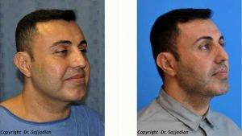
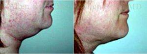
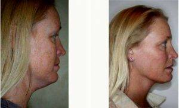
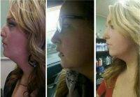
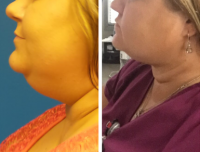
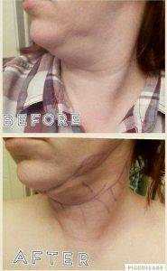

View prices of chin liposuction of patients who have been treated by various plastic surgeons.
The problem of the second chin in women and men is not always associated with age-related changes. Double chin in most cases occurs due to excess fat deposition in the lower part of the face. However, this is not always the result of obesity.
Even the slim and young people in the zone of the chin, neck and lower face sometimes form the so-called “fat trap”. The cause of the formation of the second chin can be heredity, and metabolic disorders, and some other factors.
The Internet is literally full of tips and techniques that promise to “remove the second chin without surgery” or “get rid of the second chin by home remedies.”
However, in practice to eliminate the second chin without the intervention of a plastic surgeon or the use of modern means of hardware cosmetology is almost impossible. The best way to remove the local accumulation of fat on the neck and under the chin is liposuction.
And classical “manual” liposuction, and modern water jet liposuction Body Jet is safe and simple enough mini operations that can very effectively remove excess fat from the chin without leaving visible scars.
Chin Liposuction Before & After By Dr. Ali Sajjadian, MD, FACS, Orange County Plastic Surgeon
What do you need to know when planning chin liposuction?
Liposuction of the face (liposuction of the second chin) is performed by thin cannulas under general anesthesia. The operation of liposuction is technically not complicated and safe, recovery is usually quite fast and comfortable.
In the postoperative period (about a week), a compression bandage is required.
Chin liposuction is:
Easy and safe operation. Usually such operation takes only 20-30 minutes and proceeds without the slightest complications.
Quick recovery. After 7-10 days, the neck will look pretty good (bruises and swelling gradually disappear). However, the final result you will see in a few months, when the skin is finally contracted and tightened and all residual swelling and compaction will completely disappear.
Lifetime effect (fat deposits in the liposuction zone are eliminated forever). In this case, liposuction does not always allow you to tighten the skin sufficiently effectively. If the skin is reduced badly needed additional hardware procedures (laser or radio frequency lifting) or a surgical lift.
Doctor Allen Rezai, MD, London Plastic Surgeon – 37 Year Old Woman Treated With Chin Liposuction Double Chin Correction
Liposuction of second chin and neck without surgery
If the fat deposits in the zone of the second chin are not very pronounced, one alternative to surgical liposuction is one of modern techniques of cosmetology. The most effective are laser, light (ELOS) and radio frequency methods of non-surgical lipofilling and lifting of the neck and doble chin.
chin liposuction price list
*Prices are taken from patients’ reviews.
$2,500 – Liverpool, UK – 2007;
$1,500 – Andres Vargas Scott – Costa Rica, CR – 2009;
$4,000 – Australia – 2010;
$2,500 – Richard P. Rand, MD, FACS – Bellevue, WA (Seattle, WA) – 2012;
$4,800 – Dr. G. D. Castillo, in Champaign Illinois – the person who performed that surgery. – Champaign, IL (Bloomington, IL) – 2010;
$1,300 – Thomas Dalsaso Jr – Colorado Springs CO (Colorado Springs, CO) – 2010;
Dr. Payman Danielpour, MD, FACS, Beverly Hills Plastic Surgeon – 37 Year Old Woman Treated With Chin Liposuction
$2,000 – USA – 2010;
$4,000 – M. Dean Vistnes, MD – Palo Alto, CA (Bay Area, CA) – 2010;
$1,600 – Bianca Knoll, MD – Frankfurt, Germany (Frankfurt, 05) – 2011;
$4,000 – Steve Lee, MD – Flushing, NY (New York, NY) – 2011;
$2,399 – Dr.Tavasolli at Athenix – Fresno, CA – 2011;
$1,200 – Jeptha N. Cole, MD – Flowood. MS (Jackson, MS) – 2011;
$3,300 – london, uk – 2011;
$2,850 – Kevin Bounds, MD – Virginia Beach, VA – 2011;
$2,780 – Kimberly Finder, MD – San Antonio, TX – 2011;
$3,000 – John Silverton, MD – Stockton, CA – 2011;
$2,000 – Dr Donald Wakeham – Canada Calgary, AB – 2011;
$3,000 – Richard H. Tholen, MD, FACS – Minneapolis, MN – 2011;
$6,999 – Parham Ganchi, PhD, MD – Wayne, NJ – 2011;
$4,600 – Andrew B. Denton, MD – Vancouver, BC – 2011;
$6,000 – Leo Lapuerta, MD – Houston, TX – 2011;
$2,600 – Jay Burns, MD – Dallas, TX – 2011;
$5,000 – Sugene Kim, MD – The Woodlands, TX (Houston, TX) – 2011;
$3,100 – Michael H. Moses, MD – New Orleans, LA – 2012;
$1,200 – NY, NY – 2012;
$2,400 – Chester K. Cheng – Danville, CA (Bay Area) (Bay Area, CA) – 2012;
$1,500 – Hermann Solz, MD – Mannheim, Germany – 2012;
$2,000 – Syracuse – 2012;
$3,000 – Eric M. Joseph, MD – West Orange, NJ – 2012;
$2,000 – Denver – 2012;
$4,700 – Alan M. Engler, MD, FACS – New York, NY – 2012;
$5,000 – Dr. David Amron – Beverly Hills, CA – 2012;

Before And After Chin Lipo Photos
Neck & Chin Liposuction Before And After Photos
$3,750 – Jennifer Reichel, MD – Seattle, WA – 2012;
$4,000 – London – 2012;
$1,300 – India – 2012;
$3,000 – Bellevue – 2012;
$1,800 – Timothy G. Rodgers, MD, FAAD – Dallas, TX (Frisco, TX) – 2012;
$6,000 – Dr Noorman van der Dussen / Dr Bert Oelbrandt – Belgium, BE – 2012;
$2,800 – Newport Beach – 2012;
$3,000 – Kimberly Lee, MD – Beverly Hills, CA – 2012;
$3,500 – Jonathan Sykes, MD – Sacramento, CA – 2013;
$1,200 – Perth , Australia – 2013;
$1,400 – Trevor – MyShapeLipo – 2013;
$6,000 – Kenneth B. Hughes, MD – Los Angeles, CA – 2013;
$1,600 – David C. Pearson, MD – Jacksonville, FL – 2013;
$6,700 – Bellevue – 2013;
$3,000 – Jonathan Sykes, MD – Sacramento, CA – 2013;
$2,200 – Worcester, MA – 2013;
$2,000 – Dr. Burke – Florida, FL – 2013;
$2,000 – Houston, TX – 2013;
$3,000 – James W. Goodnight, MD – Haledon, NJ (Ridgewood, NJ) – 2013;
$2,500 – Robert Heck, MD, FACS – Arlington, OH (Columbus, OH) – 2013;
$3,000 – California – 2013;
$4,500 – Kara K. Criswell, MD, FACS – Charlotte, NC – 2013;
$2,600 – Neena Will, MD – Plainfield, IL (Chicago, IL) – 2013;
$1,850 – dreambody center – Scottsdale, AZ – 2013;
$7,000 – D. Scott Rotatori, MD – Winter Park, FL (Orlando, FL) – 2009;
$1,200 – Ronald Friedman, MD – Dallas, TX (Plano, TX) – 2013;
$4,500 – Martin Jugenburg, MD – Toronto, ON – 2013;
$2,500 – Lone Tree – 2013;
$2,000 – Remus Repta, MD – Phoenix, AZ (Scottsdale, AZ) – 2013;
$1,000 – Tampa – 2013;
$2,200 – Karol A. Gutowski, MD, FACS – Northbrook, IL (Chicago, IL) – 2013;
$3,000 – Jennifer Lauren Crawford, MD – Austin, TX – 2013;
$3,000 – Chase Lay, MD – Los Gatos, CA (Bay Area, CA) – 2013;
$4,800 – Vivek Bansal, MD – Danville, CA – 2013;
$4,000 – Byron D. Poindexter, MD – Reston, VA – 2006;
$6,000 – Andrew Jacono, MD – Great Neck, NY (Manhattan, NY) – 2013;
$1,020 – Joseph F. Capella, MD – Ramsey, NJ – 2013;
$2,000 – Sam Most, MD – Palo Alto, CA (Bay Area, CA) – 2013;
$3,500 – Richard H. Fryer, MD – Sandy, UT (Salt Lake City, UT) – 2012;
$5,300 – Tamas Karvasz – Budapest, Hungary – 2013;
$1,500 – Australia – 2013;
$3,900 – Edward J. Bednar, MD – Charlotte, NC – 2013;
$2,600 – James R. Bruno, MD, FACS – Chevy Chase, MD – 2013;
$2,915 – Mark Eberbach, MD – Hudson, FL (Tampa, FL) – 2016;
$1,400 – Timeless MD – Palm Harbor, FL – 2013;
$4,700 – Virginia – 2013;
$3,500 – Kurtis Martin, MD – Cincinnati, OH – 2013;
$4,000 – Justin Yovino, MD, FACS – Beverly Hills, CA – 2013;
$8,000 – Anshu Gupta, MD – Encinitas, CA (San Diego, CA) – 2013;
$5,000 – Ashok Govila, FRCS, MCh, MS – Dubai, AE – 2013;
$25,000 – Ashok Govila, FRCS, MCh, MS – Dubai, AE – 2013;
$4,000 – Seattle – 2014;
$4,000 – Dr Harryono Judodihardjo – United Kingdom, GB (Great Britain) – 2013;
$3,440 – Suzanne Kim Doud Galli, MD, PhD, FACS – Washington, DC – 2012;
$3,500 – Dr Ray – Woburn, MA – 2014;
$1,800 – Elizabeth Morgan, MD, PhD – Atlanta, GA – 2005;
$3,300 – Chase Lay, MD – San Jose, CA (Bay Area, CA) – 2014;
$2,500 – Dr Nair – Surry Hills, AU – 2014;
$4,000 – Marshall T. Partington, MD, FACS – Bellevue, WA (Seattle, WA) – 2014;
$1,700 – Todd C. Miller, MD – Newport Beach, CA – 2014;
$2,200 – Peter Newen, MD – Huntington Beach, CA (Orange County, CA) – 2013;
$2,300 – Dr. Michael Elam – Newport Beach, CA (Orange County, CA) – 2014;
$3,375 – Remus Repta, MD – Scottsdale, AZ – 2014;
Neck Lift & Neck Liposuction
$5,000 – Ken Smart, MD – Frisco, TX – 2014;
$1,500 – Leonard Tachmes, MD – Miami Beach, FL (Miami, FL) – 2014;
$3,300 – Joshua Korman, MD – Mountain View, CA – 2014;
$1,500 – Dr. David Conner – Brentwood, TN – 2014;
$2,400 – Dr. Robert True – Colleyville, TX – 2014;
$1,500 – Robert Morgan Davoudi, MD – Duluth, GA (Atlanta, GA) – 2014;
$5,000 – Mossi Salibian, MD – West Hollywood, CA – 2013;
$3,600 – Andrew P. Giacobbe, MD – Buffalo, NY – 2014;
$6,000 – David Shafer, MD – NYC, NY (New York, NY) – 2014;
$8,000 – Anshu Gupta, MD – Encinitas, CA (San Diego, CA) – 2014;
$4,000 – Dr Meaghan Heckenberg – Crows Nest, AU – 2014;
$3,800 – Charles Davis – Wellington, NZ – 2014;
$4,000 – Houtan Chaboki, MD – Washington, DC (Washington DC, DC) – 2014;
$1,500 – Aric Eckhardt, MD – Moline, IL – 2014;
$2,000 – Birmingham – 2014;
$3,200 – Brian K. Reedy, MD – Wyomissing, PA (Reading, PA) – 2014;
$4,500 – Adam L. Basner, MD – Lutherville Timonium, MD (Baltimore, MD) – 2014;
$4,000 – Kurtis Martin, MD – Cincinnati, OH – 2010;
$1,400 – Ronald Friedman, MD – Plano, TX – 2015;
$1,200 – Eric Seiger, DO – Fenton, MI – 2014;
$1,600 – Christine A. Stiles, MD – Plano, TX (Dallas, TX) – 2015;
$9,999 – Sergey Voskin, MD – Brooklyn, NY – 2015;
$2,500 – Michael Devlin, MD – Little Rock, AR – 2015;
$4,000 – Richard P. Rand, MD, FACS – Bellevue, WA (Seattle, WA) – 2015;
$4,000 – Scott A. Brenman, MD, FACS – Philadelphia, PA – 2015;
$2,500 – William C. Rigano, MD – Centerville, OH (Dayton, OH) – 2015;
$1,550 – Anil R. Shah, MD – Chicago, IL – 2015;
$1,800 – Raffy Karamanoukian, MD, FACS – Santa Monica, CA (Los Angeles, CA) – 2015;
$2,000 – Christopher J. Morea, MD – Raleigh, NC (Raleigh-Durham, NC) – 2015;
$1,800 – Frank Filiberto, MD – Melbourne, FL – 2014;
$1,400 – Ronald Friedman, MD – Plano, TX – 2014;
$2,000 – Dr Byrne – Baltimore, MD – 2015;
$2,500 – Christine A. Stiles, MD – Frisco, TX (Dallas, TX) – 2015;
$3,501 – Dilip D. Madnani, MD, FACS – New York, NY – 2015;
$2,500 – Karol A. Gutowski, MD, FACS – Chicago, IL – 2015;
$2,850 – Sheena Kong, MD – San Francisco, CA – 2015;
$1,200 – Sassy, RN – Gilbert, AZ – 2015;
$3,025 – Anne Taylor, MD – Columbus, OH – 2015;
$9,200 – Michael Salzhauer, MD – Miami, FL – 2013;
$2,500 – Christine A. Stiles, MD – Frisco, TX (Dallas, TX) – 2015;
$3,900 – Parham Ganchi, PhD, MD – Wayne, NJ – 2015;
$2,500 – North Carolina, NC – 2015;
$1,500 – Marcelo Ghersi, MD – Coral Gables, FL (Miami, FL) – 2015;
$3,800 – Mats Hagstrom, MD – San Francisco, CA – 2015;
$1,900 – Stanley Castor, MD – Tampa, FL – 2015;
$2,800 – William D. Strinden, MD – Lufkin, TX – 2015;
$2,000 – Brian Dorner, MD – Columbus, OH – 2015;
$2,500 – Ronald L. Moy, MD – Los Angeles, CA – 2012;
$4,000 – Dr. Vincent Michalak – Issaquah, WA – 2015;
$6,000 – Houston – 2015;
$1,800 – Jose Perez-Gurri, MD, FACS – Miami, FL – 2015;
$4,600 – Kevin Tehrani, MD, FACS – New York, NY – 2015;
$3,600 – Dr. Wise – Wayne, NJ – 2015;
$2,500 – Jeff T. Healy, MD – Aiea, HI (Honolulu, HI) – 2015;
$2,500 – Eric Okamoto, MD – Fremont, CA – 2008;
$3,500 – Michael Diaz, MD – Melbourne, FL – 2015;
$2,000 – Robert M. Lowen, MD – Mountain View, CA – 2015;
$2,000 – Bhupendra C.K. Patel, MD – Salt Lake City, UT – 2015;
$5,528 – Dr Michael Wil – Frederick, MD – 2015;
$3,500 – Dr. Bergeron – Houston, TX – 2015;
$6,000 – Brian K. Machida, MD, FACS – Ontario, CA – 2015;
$5,600 – Dr. Hong, Jonghyun – South Korea, KR – 2015;
$2,000 – Westchester – 2015;
$8,500 – Dr. salas – clinica de cirugia cosmetica – 2015;
$2,500 – Dr Roxy Grawe – Powell, OH – 2015;
$4,995 – Justin Yovino, MD, FACS – Beverly Hills, CA – 2015;
$1,400 – Ronald Friedman, MD – Plano, TX – 2015;
$4,200 – Dr. Jonghyun Hong – Seoul, South Korea – 2015;
$2,800 – Joseph DeLozier III, MD – Nashville, TN – 2015;
$2,700 – Philip S. Schoenfeld, MD, FACS – Chevy Chase, MD – 2015;
$1,500 – Grant Stevens, MD – Marina Del Rey, CA (Los Angeles, CA) – 1990;
$2,300 – Anil R. Shah, MD – Chicago, IL – 2016;
$1,400 – Ronald Friedman, MD – Plano, TX – 2015;
$11,000 – Darryl J. Hodgkinson, MD – Sydney, AU (Sydney, 02) – 2015;
$3,600 – New York City, NY – 2015;
$2,500 – Dr. Stephen Ralston – Ogden, UT – 2016;
$3,600 – Thomas P. Sterry, MD – Manhattan, NY (New York, NY) – 2016;
$2,500 – Bhupesh Vasisht, MD – Voorhees, NJ – 2015;
$2,800 – Elizabeth Whitaker, MD, FACS – Atlanta, GA – 2016;
$2,300 – Christopher T. Maloney Jr., MD – Tucson, AZ – 2016;
$2,000 – Christian A. Prada, MD, FACS – Saint Louis, MO – 2016;
$3,500 – Victoria – 2016;
$3,000 – Bryan C. McIntosh, MD – Tacoma, WA (Bellevue, WA) – 2016;
$3,400 – N. John Yousif, MD – Mequon, WI (Waukesha, WI) – 2016;
$2,500 – Dr. Curtis Martin – Cincinnati, OH – 2015;
$1,500 – Erik Miles, MD, FACS – Huntersville, NC (Charlotte, NC) – 2015;
$8,000 – Dr Anton Potgieter – Sandton, South Africa – 2016;
$2,850 – Dr. Ciresi – Fresno, CA – 2016;
$3,500 – Prasad Sureddi, MD – Southbury, CT (Danbury, CT) – 2016;
$1,900 – Stanley Castor, MD – Tampa, FL – 2016;
$3,800 – Adam Schaffner, MD, FACS – New York, NY – 2016;
$3,500 – Karol A. Gutowski, MD, FACS – Chicago, IL – 2016;
$4,350 – Todd Adam, MD – Webster, TX (League City, TX) – 2016;
$5,500 – Aaron J. Mayberry, MD, FACS – Albuquerque, NM – 2016;
$1,200 – Ronald Friedman, MD – Plano, TX – 2016;
$5,000 – Andrew Jacono, MD – Great Neck, NY (Manhattan, NY) – 2016;
$2,600 – dr singer – Nyack, NY – 2016;
$1,400 – Paul S. Gill, MD – The Woodlands, TX (Houston, TX) – 2016;
$2,000 – John T. Lindsey, MD – New Orleans, LA (Metairie, LA) – 2016;
$2,500 – Philip Young, MD – Bellevue, WA – 2016;
$5,200 – Sacramento – 2016;
$3,000 – Adam J. Oppenheimer, MD – Orlando, FL – 2016;
$5,000 – Parker A. Velargo, MD – New Orleans, LA – 2015;
$3,000 – Sonya Merriman, MD – Valdosta, GA – 2016;
$2,500 – Anne Taylor, MD – Worthington, OH (Columbus, OH) – 2016;
$2,500 – Daniel Lanzer, MBBS – Melbourne, AU (Melbourne, 07) – 2016;
$3,500 – West Des Moines – 2016;
$1,000 – Stephen E. Metzinger, MD, MSPH, FACS – Metairie, LA – 2016;
$3,203 – Ajay Mahajan, MD, FRCS (Plast) – United Kingdom, GB (Leeds, Q5) – 2015;
$2,600 – S. Randolph Waldman, MD – Lexington, KY – 2016;
$3,750 – Douglas Wu, MD – San Diego, CA – 2016;
$3,400 – Karol A. Gutowski, MD, FACS – Chicago, IL – 2016;
$2,000 – L. Franklyn Elliott, MD – Atlanta, GA – 2015;
$3,725 – Scott Tucker, MD – Winston Salem, NC – 2016;
$3,600 – Thomas P. Sterry, MD – Manhattan, NY (New York, NY) – 2016;
$7,800 – Jason Emer, MD – The Roxbury Institute, Beverly Hills, CA (Los Angeles, CA) – 2016;
$2,900 – Eric M. Joseph, MD – West Orange, NJ – 2016;
$1,500 – J. Jason Wendel, MD, FACS – Nashville, TN – 2014;
$4,800 – Ben Talei, MD – Beverly Hills, CA – 2016;
$4,100 – Ben Talei, MD – Los Angeles, CA (Beverly Hills, CA) – 2016;
$5,500 – Martin Jugenburg, MD – Toronto, ON – 2016;
$4,500 – Sanjay Parashar, MD – Dubai, AE – 2016;
$2,400 – Joseph O’Connell, MD – Westport, CT – 2016;
$3,600 – Dr. Sperry – Office – 2016;
$4,850 – Richard G. Reish, MD – Garden City, NY (New York, NY) – 2016;
$3,475 – Jose E. Barrera, MD, FACS – San Antonio, TX – 2016;
$6,000 – Darryl J. Blinski, MD – Miami, FL – 2016;
$4,000 – Dr. Jonghyun Hong – Seoul, Korea, KR (South Korea) – 2016;
$1,800 – Paul W. Papillion, MD – Coolsprings, Franklin, TN (Nashville, TN) – 2016;
$2,000 – Dr. Jorge Afanador – Colombia, CO – 2016;
$2,900 – Dr Kim – New York City, NY – 2016;
$1,950 – Ronald Friedman, MD – Plano, TX – 2016;
$3,400 – Kyle S. Choe, MD – Virginia Beach, VA – 2016;
$4,100 – Michigan – 2016;
$2,700 – Dr. Hansen – Beverly Hills, CA – 2016;
$1,950 – John W. Tyrone, MD – Gainesville, FL – 2016;
$6,250 – McCoy Moretz, MD – Beverly Hills, CA – 2016;
$6,250 – McCoy Moretz, MD – Beverly Hills, CA – 2016;
$2,900 – Eric M. Joseph, MD – West Orange, NJ – 2016;
$5,859 – Paul E. Chasan, MD – Del Mar, CA – 2016;
$7,000 – Dr. Robert L Rodriguez – Utah, UT – 2016;
$3,501 – Dr. John Hsu – Beverly Hills, CA – 2016;
$3,126 – Michael Rich, MBBS – Armadale, AU (Armadale, 07) – 2016;
$2,400 – Dr. Annony – Columbus, OH – 2016;
$1,950 – Richard Sadove, MD – Gainesville, FL – 2016;
$2,500 – Kenneth B. Hughes, MD – Los Angeles, CA – 2016;
$2,800 – Cynthia L. Mizgala, MD – Metairie, LA – 2016;
$1,500 – Ronald Friedman, MD – Plano, TX – 2016;
$1,950 – Ronald Friedman, MD – Plano, TX – 2016;
$1,800 – Sang W. Kim, MD – East Syracuse, NY – 2016;
$5,499 – M. Bradley Calobrace, MD, FACS – Louisville, KY – 2016;
$6,000 – Humberto Palladino, MD, FACS – El Paso, TX – 2016;
$2,789 – Toronto – 2017;
$3,500 – Dr. Shannon O’Brien – Portland, OR – 2015;
$2,270 – Melbourne – 2017;
$2,500 – Richard Zienowicz, MD – Providence, RI – 2017;
$1,500 – Ronald Friedman, MD – Plano, TX – 2017;
$4,100 – Johan E. Brahme, MD – San Diego, CA – 2017;
$3,800 – Thomas P. Sterry, MD – New York, NY – 2017;
$1,800 – Timothy Fee, MD – Jacksonville, FL – 2017;
$2,100 – Jayesh Panchal, MD – Oklahoma City, OK (Edmond, OK) – 2017;
$2,900 – Kimberly Finder, MD – San Antonio, TX – 2017;
$1,500 – Ronald Friedman, MD – Plano, TX – 2017;
$4,000 – Mariusz Sapijaszko, MD, FRCPC – Edmonton , AB (Edmonton, AB) – 2017;
$3,100 – Daniel J. Liebertz, MD – Kirkland, WA – 2017;
$3,040 – Kevin F. Ciresi, MD, FACS – Fresno, CA – 2017;
$4,600 – Christopher J. Davidson, MD, FACS – Boston, MA – 2017;
$1,499 – Ronald Friedman, MD – Plano, TX – 2017;
$3,000 – John Philip Connors III, MD, FACS – Atlanta, GA – 2017;
$1,700 – Warren Schutte, MD – Loveland, CO (Fort Collins, CO) – 2017;
$2,000 – Absolute Cosmetics – Crawley-nedlands, AU – 2017;
$3,899 – Michael Vennemeyer, MD – Dallas, TX (Southlake, TX) – 2017;
$3,559 – WINIPEG – 2016;
$1,750 – Ronald Friedman, MD – Plano, TX – 2017;
$1,950 – Ronald Friedman, MD – Plano, TX – 2017;
$4,200 – Steven Jacobson, MD – Rochester, MN – 2017;
$3,200 – Mats Hagstrom, MD – San Francisco, CA – 2016;
$3,500 – Arnold S. Breitbart, MD, FACS – New York, NY (Long Island, NY) – 2017;
$4,500 – Steve Laverson, MD – San Diego, CA – 2017;
$1,500 – Hoang M. Lawrence Nguyen, MD – Sioux Falls, SD – 2017;
$3,875 – Dr Goldberg – Monterey, CA – 2017;
$3,000 – Dr. Justin Yovino (Ideal Face & Body) – Beverly Hills, CA – 2017;
$2,500 – Flowood, MS – 2017;
$3,750 – Dr. Brothers – Atlanta, GA – 2017;
$2,676 – Jeffrey M. Hartog, DMD, MD – Winter Park, FL (Orlando, FL) – 2017;
$2,000 – Clinic 45 – Houston, TX – 2017;
$1,500 – Dr. Wolf – Dayton, OH – 2017;
$2,500 – Josh Olson, MD – Gilbert, AZ (Scottsdale, AZ) – 2017;
$4,200 – Yily De Los Santos, MD – Dominican Republic, DO – 2017;
$5,000 – Patricia L. Eby, MD – Memphis TN (Memphis, TN) – 2017;
$1,200 – Theodore Diktaban, MD, FACS – Manhattan, NY – 2017;
$5,150 – Eugene Kim, MD – Beverly Hills, CA – 2017;
$1,700 – Warren Schutte, MD – Loveland, CO (Fort Collins, CO) – 2017;
$2,300 – Los Angeles – 2017;
$6,500 – Richard Parfitt, MD – Madison, WI – 2017;
$3,000 – David C. Mabrie, MD – San Francisco, CA (Bay Area, CA) – 2017;
$8,000 – Miami – 2009;
$3,000 – Dr. Mirrafati – Orange County, CA – 2009;
$2,000 – Tucson – 2009;
$7,000 – San Francisco – 2009;
$2,000 – California – 2009;
$2,900 – Steve Burros – Lancaster, CA – 2009;
$3,000 – Tucson – 2009;
$1,800 – Sabrina Lahiri, MD – The Woodlands, TX – 2010;
$3,000 – Miami – 2010;
$9,000 – Ross A. Clevens, MD – Melbourne, FL – 2011;
$3,000 – Singapore – 2011;
$2,700 – London – 2011;
$3,400 – Beverly A. Fischer, MD – Maryland (Baltimore, MD) – 2012;
$2,000 – Barry E. DiBernardo, MD – Montclair, NJ – 2012;
$2,000 – Hema Sundaram, MD – Fairfax, VA – 2014;
$2,200 – Richard J. Bruneteau, MD – Omaha, NE – 2013;
$3,300 – Barbara L. Persons, MD, FACS – Lafayette, CA (Bay Area, CA) – 2013;
$3,000 – Dr. Raul Gongora – Tijuana, Mexico – 2014;
$3,700 – Stanley Okoro, MD – Marietta, GA (Atlanta, GA) – 2015;
$4,400 – Sabrina Fabi, MD – San Diego, CA – 2015;
$1,800 – New Jersey or New York – 2015;
$1,500 – Ronachai Komthong, MD – Thailand, TH – 2014;
$4,300 – Sam Naficy, MD, FACS – Bellevue, WA (Seattle, WA) – 2015;
$6,000 – Gary A. Smith, MD (retired) – Roseville, CA – 2016;
$5,000 – R. Stephen Mulholland, MD – Toronto, ON – 2016;